FIELD TEAM TRAINING
AMN Field App + ACS 2.0
New field tools, and the rebuilt site-commissioning workflow
Drive Test • Field Survey • Backend Portal • Auto Clock-In • ACS 2.0
Use the arrow keys or the buttons to navigate
New field tools, and the rebuilt site-commissioning workflow
Drive Test • Field Survey • Backend Portal • Auto Clock-In • ACS 2.0
Use the arrow keys or the buttons to navigate
Two parts. First the new tools in the AMN Field App, then the rebuilt ACS 2.0 site-commissioning workflow — how it changes from the old page and how to complete a site.
Automated signal-coverage testing — one drive validates every cell at the site, all sectors and technologies.
The paper survey goes digital — GPS, photos, Snyper import, verdict, signature, one-tap submit.
View and review submitted surveys and download PDF reports.
Automatically clocked in on login — no more forgotten clock-ins.
The rebuilt site-commissioning page — a guided 7-step workflow, whole-site testing, automatic CCTV, and one leave code.
Automated signal coverage testing while driving around a site
UPDATED One drive now validates all of a site's cells — every sector, every technology (2G/3G/4G/5G) — in a single session and a single KML file.
A drive test is a signal coverage survey performed by driving around a cell tower site. This replaces the need for the GNetTrack Pro app — the same logging is now built directly into the AMN Field App, capturing signal strength and GPS position to build a coverage map showing where the signal is strong, weak, or absent.
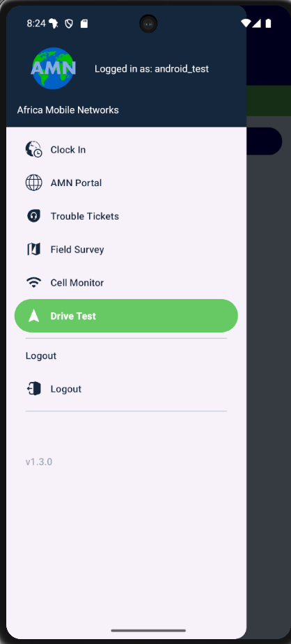
Before driving, the engineer sets up the test at the tower site:
Once set up, tap Start and begin driving. The app runs in the background, logging continuously.
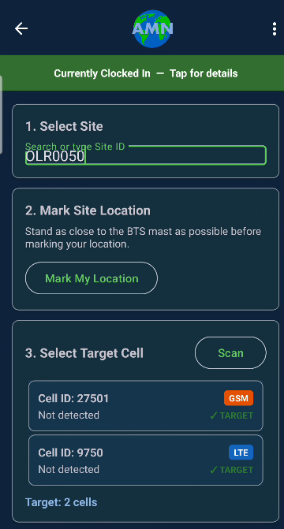
Site selected — its cells auto-load as targets with technology badges
A phone can only "see" the cells of the network mode it is currently on — on 2G it cannot see 4G cells at all. So on a multi-technology site, the app guides you through each technology in turn.
Change the phone's preferred network type only when the app asks, and keep driving — the drive keeps logging across the switch. Single-technology sites show no prompts at all.
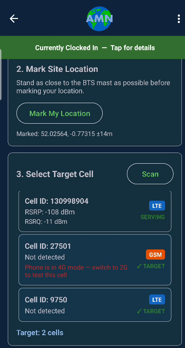
Scan with the phone on 4G — the 2G cell is greyed with a "switch to 2G" note
While the test is running, the dashboard shows real-time metrics:
The dashboard shows one row per target cell with a live PASS / FAIL indicator. A cell turns to PASS once enough good readings are collected for it. While you're on 2G, the 3G/4G cells sit at FAIL — that's expected; they fill in after you switch modes.
Important: While a drive test is running, the app stays on the dashboard screen — you cannot navigate to other screens until you stop the test.
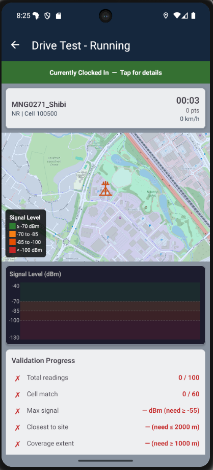
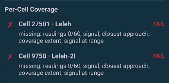
Per-cell coverage rows — each target cell validates independently
The app checks the ACS criteria. Two rules apply to the whole drive, and the rest apply to every target cell individually — the drive is complete only when every cell passes:
| Whole drive | |
|---|---|
| Minimum 100 data points | ✓ / ✗ |
| Data is recent (within 4 days) | ✓ / ✗ |
| Each target cell | |
| At least 60 matching readings | ✓ / ✗ |
| Maximum signal ≥ –55 dBm | ✓ / ✗ |
| Closest approach within 2 km | ✓ / ✗ |
| Coverage extent ≥ 1 km | ✓ / ✗ |
| Signal at range (>600 m) | ✓ / ✗ |
When every cell has passed, the app shows "✓ All cells validated" with buttons to keep driving, stop, or export.
Results are exported as one combined KML file covering every technology and sector driven — compatible with Google Earth and the ACS system.

Signal readings are colour-coded: green (strong), amber, orange, red (weak).
The file also records which engineer conducted the drive, the site, and the start time — an independent record of who did the test.
A complete digital replacement for the paper survey form
The digital form mirrors every section of the paper form, organised into collapsible sections so engineers can focus on one area at a time.

No more writing down coordinates by hand. The app captures precise GPS readings with a single tap at multiple points during the survey.
Coordinates include latitude, longitude, and altitude, captured to 6 decimal places using the device's high-accuracy GPS.
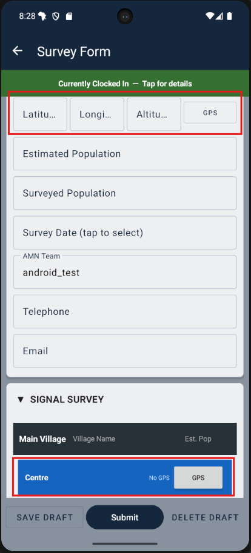
Signal readings from the Snyper RF scanner can be imported directly into the survey via USB — no laptop required.
The app reads 2G, 3G, 4G, and 5G signal data including dBm, RSSI, MNO, band, cell ID, and more — exactly what would previously be transcribed by hand.
Snyper CSV files are also uploaded to the server alongside the survey for reference.
Photos are taken directly within the survey and automatically attached — no separate email or upload step.
Multiple photos per category. Use the camera or pick from the gallery.

At the end of the survey, the field engineer records their on-site assessment of whether the site is suitable.
This verdict is the surveyor's professional judgement from the field — it is visible to reviewers on the backend portal alongside all the supporting data.
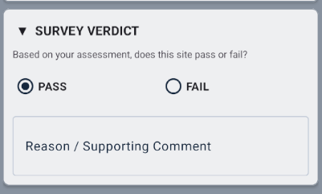
When the surveyor is ready, they tap Submit. The app checks that all required fields are complete, then presents a signature capture screen.
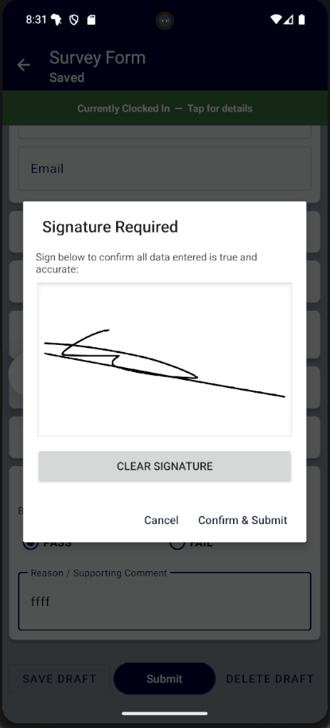
The app automatically saves your progress as you type. If you're interrupted — a phone call, low battery, or need to travel — your work is preserved as a draft. Come back any time to finish.
All form data and photos are stored locally on the device. You can complete an entire survey without network coverage and submit when you're back online.
Centrally view and review submitted field surveys
Submitted surveys appear immediately on the AMN Portal, giving managers and reviewers instant visibility.
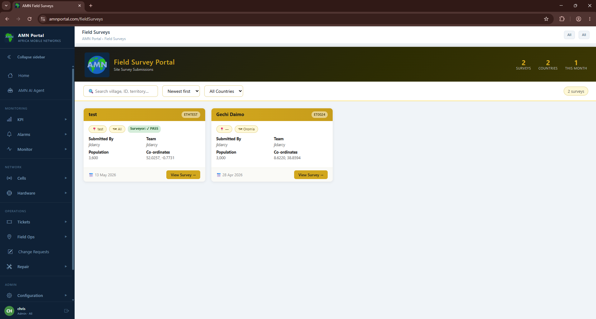
Clicking a survey card opens a full detail view with every section of the submitted form, all photos, and signal readings.

Any survey can be downloaded as a professional PDF report directly from the portal — ideal for sharing with stakeholders and for inclusion into As Built documents.
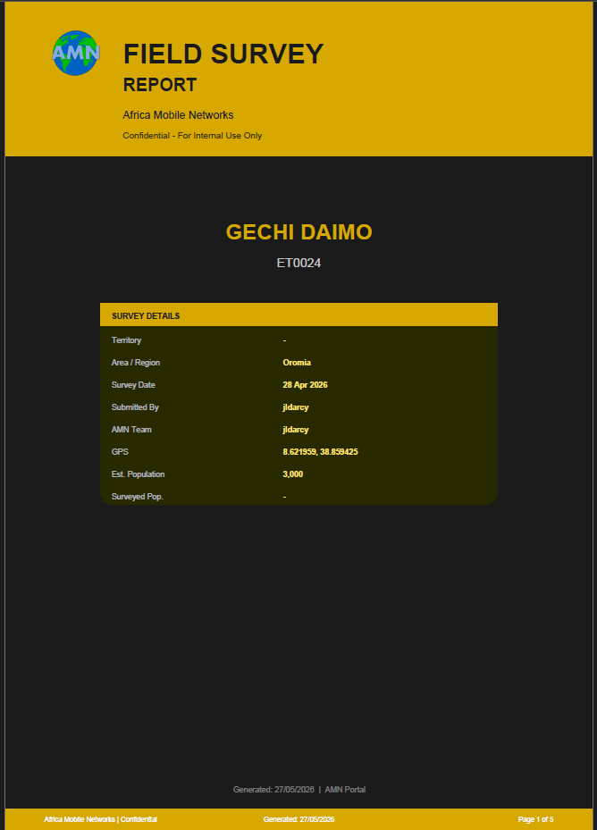
Automatically clocked in when you log into the app
Field engineers are now automatically clocked in as soon as they log into the app — no extra steps needed.
Only field engineers are auto-clocked in — other user types are unaffected.
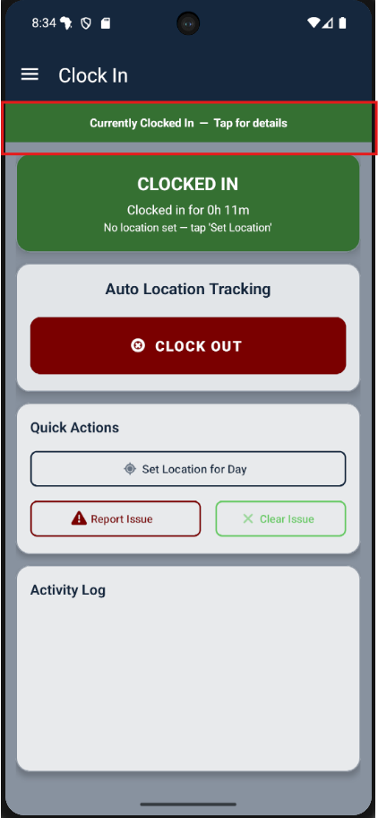
The commissioning page, rebuilt — what's changed and how to complete a site
On the old page you completed a separate ACS for each individual cell — and every sector carries a cell for each technology on it. A three-sector site running 2G and 4G is six cells, so that was up to six separate ACS completions.
ACS 2.0 does the site once. A single dispatch covers every cell and sector, and gives you one submission and one leave code for the whole site.
| Aspect | Classic ACS | ACS 2.0 |
|---|---|---|
| Layout | Seven tabs across the top of the page | Numbered workflow down the left |
| Scope | Completed one cell at a time | Whole site — all cells & sectors, one visit |
| Progress | No sign on the tabs of what's done | Live ✓ / ✕ / ! on every step |
| CCTV | A separate, manual snapshot test | Camera configured automatically, end to end |
| VSAT test | Guessed the backhaul from ping speed | Reads the site's recorded backhaul |
| Submitting | Little feedback on what uploaded | Item-by-item progress + a clear outcome |
| Loading | A heavier page — slower over a poor link | About half the size — loads better on VSAT |
Seven steps down the left — your checklist for the visit
Work top to bottom. Each step carries a live status — a green ✓ when it's done, a red ✕ where something needs your attention, and a dash until you get there — so you always know what's left. You can jump back to any step at any time.
Steps 01–03 · getting set up
See every past dispatch for the site. Hit + New dispatch to start, or Edit the latest to carry on.
Choose the dispatch type and the cell in scope. The workflow stays locked until a type is chosen, so you can't skip it.
Service checks, signal & power readings, engineer names, and your installation and Snyper photos — the same fields you know.
Step 03 · Drive test upload
Every sector runs a cell per technology — 2G and 4G (and 3G where it's deployed). ACS 2.0 validates each of those cells on its own: enough coverage points, a strong enough peak signal, and good spread around the site.
Record it however suits the drive: one file that covers all technologies, or separate files — say a 2G drive and a 4G drive. ACS combines them and checks every cell against the whole set.
Step 04 · Background tests
Press Initiate all background tests and confirm every sector is up. The tests now cover the whole site — every BTS and every EMC — not just one cell.
Each test is a card with a live status. The 15-minute BTS ping runs per sector, in parallel, each with its own timer and a Re-run button. Start it early — it's the longest, and it runs server-side while you fill in other steps.
Step 04 · CCTV
There's no separate CCTV test to run any more. The CCTV card does the whole job automatically: it checks the camera, applies the standard configuration, and pulls a snapshot.
Your part is the bit only a human can do: when the snapshot loads, frame the cabinet box, then tick that the cabinet is in the box and the solar panels are visible. That pushes the intrusion region and completes the card.
ACS 2.0 reads the site's recorded backhaul and only runs the Es/No & C/No power-level test where it can — on Gilat, the one satellite platform whose modem reports those levels.
The Es/No and C/No power-level test runs and must pass. Expand the card to watch both level sets build up in 60-second blocks.
Other VSAT platforms (Hughes, UHP…) don't expose those readings, and LEO sites (Starlink, Amazon…) have no dish — so the card shows N/A. That's correct, not an error: the 15-minute BTS ping covers the link.
Step 06 · Satellite info
For dish-backhaul sites, the satellite step shows the calculated pointing and skew angle. Enter your measured skew and confirm it — it must sit within tolerance of the calculated value.
On LEO sites this whole step disappears, because there's no dish to skew.
Step 07 · Validate & submit
The Validate step tallies everything: Passed / Failed / N/A. Any failure has a Fix → button that jumps you straight to the field that needs attention.
Zero failures issues a leave code automatically. With failures you can still submit — but the leave code has to come from GNOC.
On submit you get an item-by-item progress list, then an outcome box confirming everything reached the ACS server — so you're never guessing whether it went through.
What stays the same, and what to remember on the day
This is a new way to drive the same machine. Everything you already trust about ACS is intact.
The tests cover the whole site — confirm all sectors and cells are up before you start.
It's a 15-minute test per sector. Kick off "Initiate all" as soon as you arrive and let it run.
The long ping runs server-side — move on to other steps while it completes. Just don't reload the page, or it restarts.
Just frame the cabinet box when the snapshot loads and confirm cabinet + solar are visible.
Starlink/Amazon sites show the VSAT power test as N/A — that's expected, not a fault.
The outcome box confirms every item uploaded. If anything failed, fix it and submit again.
Drive Test, Field Survey, the Portal and Auto Clock-In in the Field App — and ACS 2.0 guiding every site visit to a clean leave code.
Africa Mobile Networks • Field App & ACS 2.0 • Questions during a visit go to GNOC